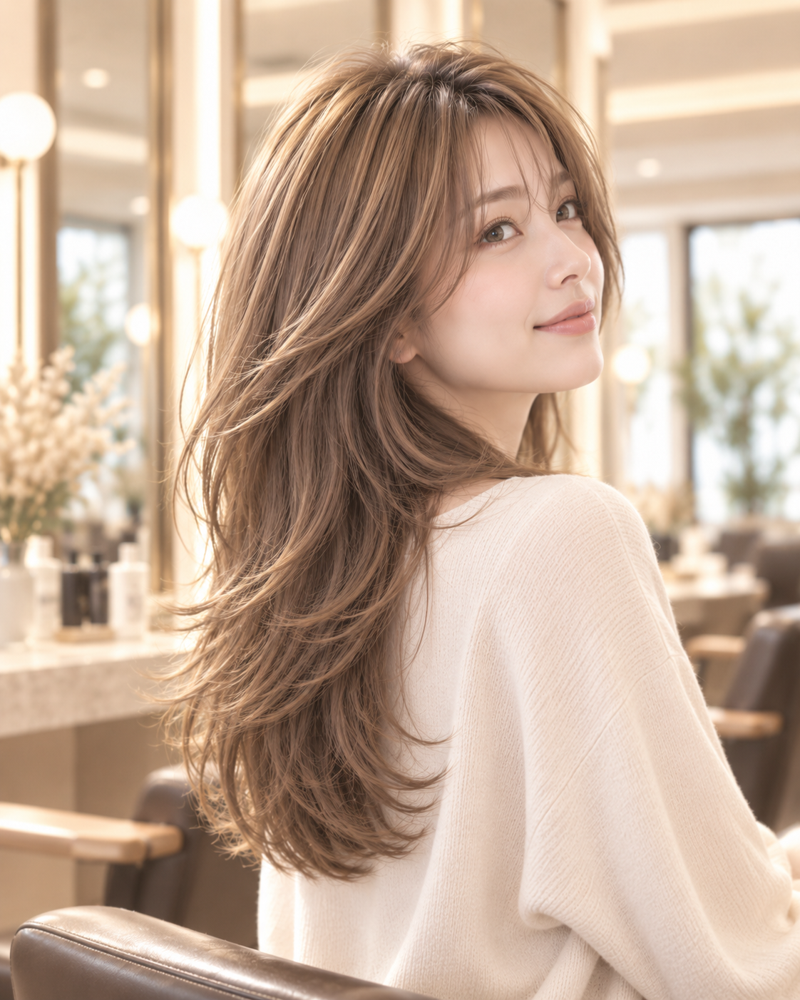
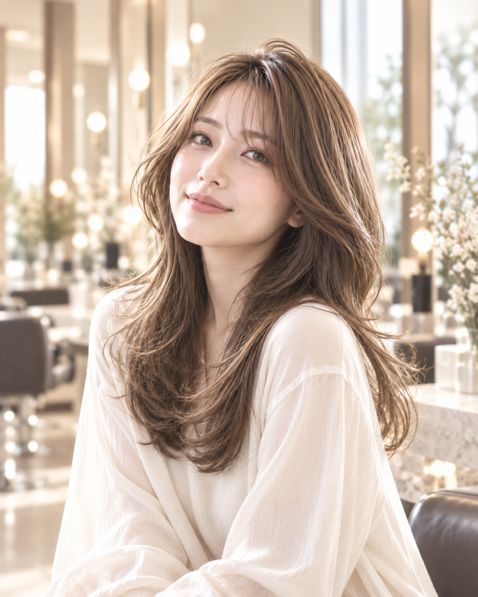
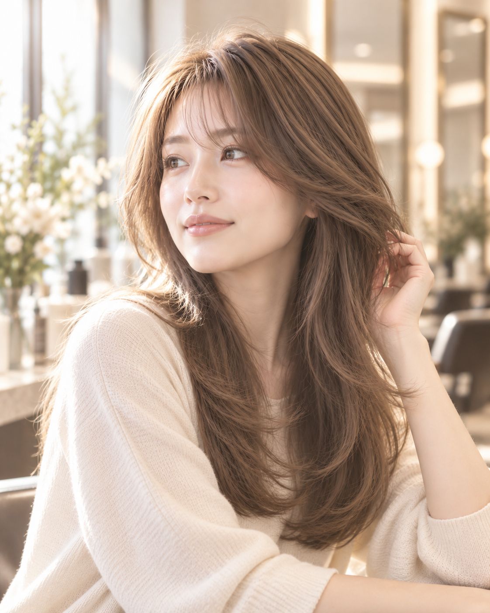
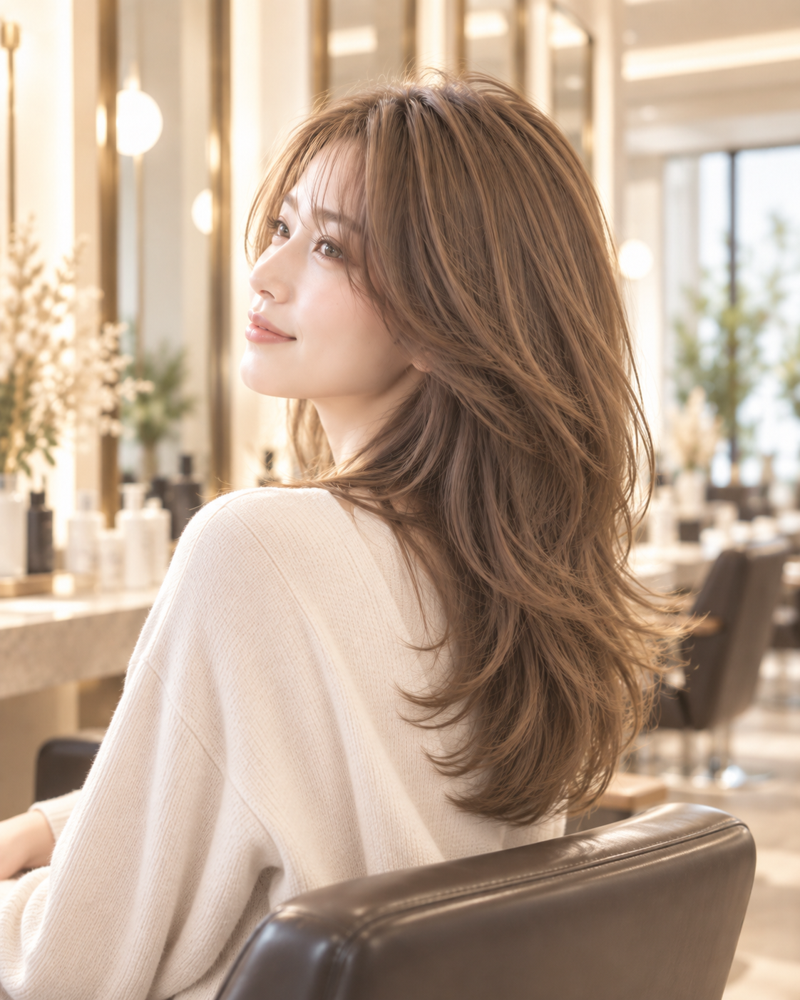
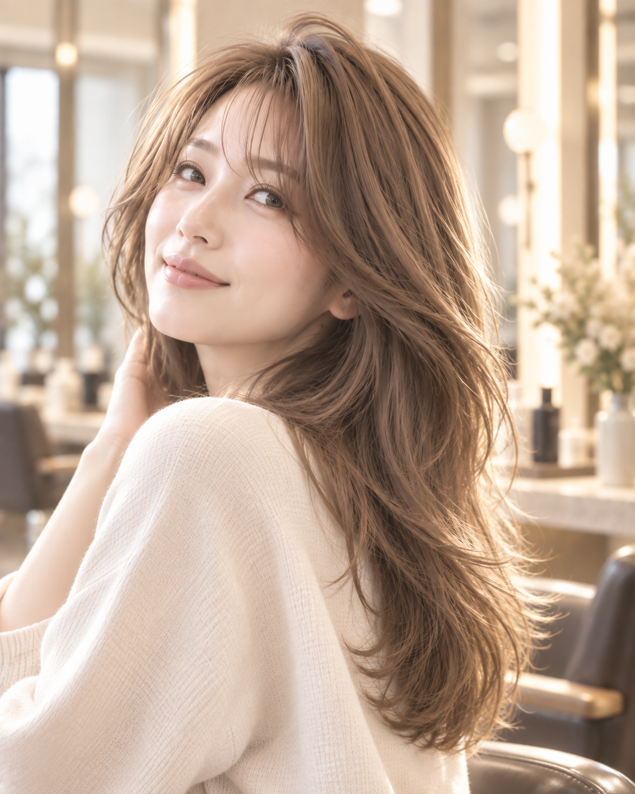
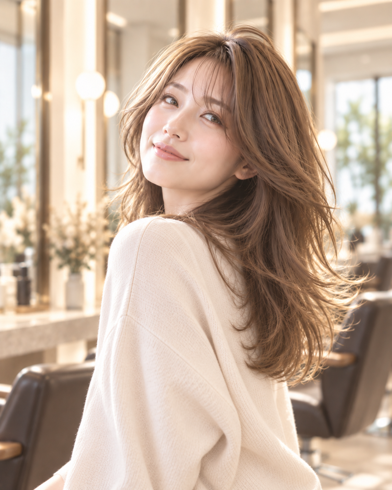
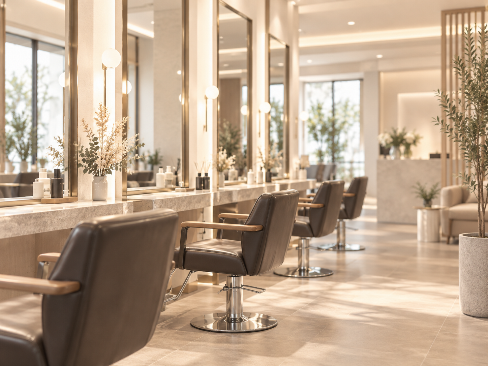

01 / SOFT LAYER
毛先の段差と動きで、
シルエットをやわらかく。
顔まわりから毛先まで、レイヤーの入り方と軽さが見える構図で、印象の変化を視覚化。
※掲載ビジュアルはAI生成のイメージです。実際の施術例・スタッフ・お客様の写真ではありません。

色も、長さも、雰囲気も。最初から答えを決めて来なくていい。相談しながら、今の自分にちょうどいい着地点を探していく。
空席・メニューを確認する公開口コミには、カットやカラーの仕上がりに加え、シャンプーの心地よさや、静かにゆっくり過ごせたという声が見られます。
髪の状態、普段のセット、好きな雰囲気。言葉になりきっていない希望も、話しながら少しずつ具体化していく。
扱いづらさや気になるポイントから。
写真や色味、長さの印象をすり合わせ。
毎日の扱いやすさまで含めて着地点へ。
公開情報で確認できるカット、透明感カラー、トリートメント、ヘッドスパ。髪の色・質感・シルエットを主役として見せます。

顔まわりから毛先まで、レイヤーの入り方と軽さが見える構図で、印象の変化を視覚化。
※掲載ビジュアルはAI生成のイメージです。実際の施術例・スタッフ・お客様の写真ではありません。

髪表面のツヤ、色の透け感、肌なじみのやわらかさを主役にしたニュアンスカラー表現。
※掲載ビジュアルはAI生成のイメージです。実際の施術例・スタッフ・お客様の写真ではありません。
長さだけではなく、毛先の動き、表面の軽さ、カラーの透け感。言葉だけでは伝わりづらい価値を、髪そのものの見え方で。

※掲載ビジュアルはAI生成のイメージです。実際の施術例・スタッフ・お客様の写真ではありません。

※掲載ビジュアルはAI生成のイメージです。実際の施術例・スタッフ・お客様の写真ではありません。

※掲載ビジュアルはAI生成のイメージです。実際の施術例・スタッフ・お客様の写真ではありません。
「思い通りのカットで、カラーも可愛い色に。」公開口コミ内容の要約
「シャンプーが丁寧で、気持ちよかった。」公開口コミ内容の要約
「ゆっくり静かに過ごせた。」公開口コミ内容の要約
※口コミは個人の感想です。効果・結果を保証するものではありません。

※店内ビジュアルはAI生成のイメージです。実際の店内写真ではありません。
通いやすさと、施術中の落ち着いた時間。その両方を大切にしたい人へ。
なりたいイメージがはっきりしていなくても。メニューや空席を見ながら、次の髪を考えてみませんか。
空席・メニューを確認する